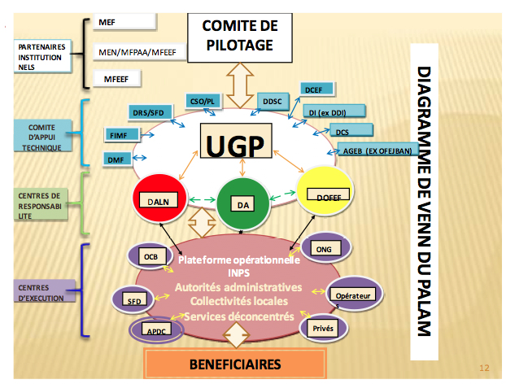

Diagramme de Venn
Venn chart of VOLIP

Le diagramme de Venn ainsi présenté, est structuré pour refléter le montage institutionnel du PALAM, les rôles et responsabilités des différents acteurs impliqués dans la mise en œuvre.
Il fait apparaître leurs interrelations et niveaux d’implication, selon leurs domaines de compétences, à travers des couleurs et formes (flèches, lignes).
The Venn diagram, as shown above, is structured to reflect the institutional arrangement of VOLIP, The roles and responsibilities of the different actors involved in the implementation.
It shows their interrelations and levels of involvement, depending on their areas of expertise, through colors and shapes (arrows, lines).